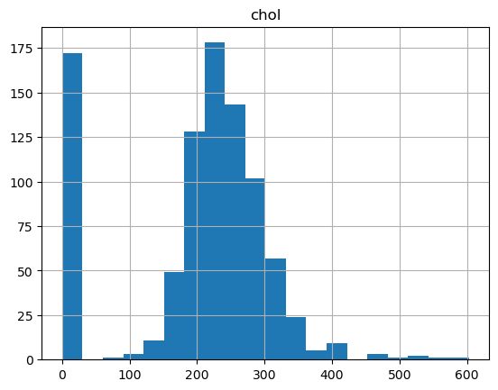
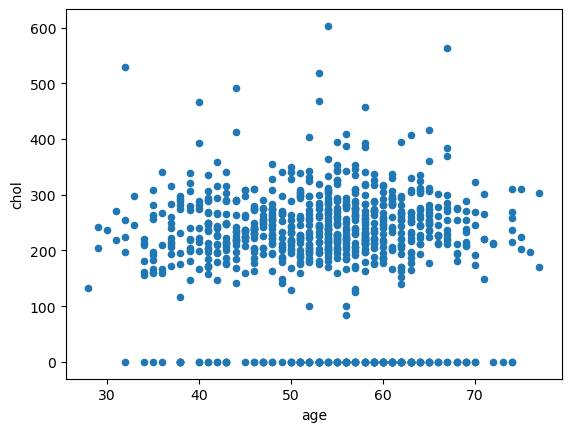

## Place your code here
import pandas as pd
df = pd.read_csv("heart_disease_uci.csv")Homework 1
Answers
Instructions
- Insert the code and generate the figures you need to solve the problems using this notebook.
Problem - Analysis of heart disease data set
Cardiovascular diseases (CVDs), commonly known as heart disease, are the leading cause of death worldwide, accounting for 17.9 million deaths annually. Contributing factors to CVDs include hypertension, diabetes, overweight, and unhealthy lifestyles.
The dataset contains 14 features or attributes from 900 patients; however, published studies chose only 14 features that are relevant in predicting heart disease.
Below you can see the description of each column (this is often called meta data)
Medical Data Dictionary (Metadata)
Age
Sex
- Male:
1 - Female:
0
Chest Pain Type
- Value 1: Typical angina
- Value 2: Atypical angina
- Value 3: Non-anginal pain
- Value 4: Asymptomatic
Resting Blood Pressure
- In mm Hg on admission to the hospital
Serum Cholesterol
- In mg/dl
Fasting Blood Sugar
- (Fasting blood sugar > 120 mg/dl):
1= True,0= False
Resting Electrocardiographic Results
- Value 0: Normal
- Value 1: Having ST-T wave abnormality (T wave inversions and/or ST elevation or depression of > 0.05 mV)
- Value 2: Showing probable or definite left ventricular hypertrophy by Estes’ criteria
Thalach
- Maximum heart rate achieved
Exercise Induced Angina
1= Yes0= No
Angina is chest pain or discomfort caused when your heart muscle doesn’t get enough oxygen-rich blood. It may feel like pressure or squeezing in your chest.
Oldpeak
- ST depression induced by exercise relative to rest
Slope
- The slope of the peak exercise ST segment
- Value 1: Upsloping
- Value 2: Flat
- Value 3: Downsloping
Vessels Colored by Flouroscopy
- Number of major vessels (0-3) colored by flouroscopy
Thalassemia
- A blood disorder called thalassemia
- Value 3: Normal
- Value 6: Fixed defect
- Value 7: Reversable defect
Target
0= No Heart Disease1= Heart Disease
### 1. Read the data into a pandas dataframe and assign it to a variable named df
2. Print the first five rows of the data set.
## Place your code here
df.head(5)| id | age | sex | dataset | cp | trestbps | chol | fbs | restecg | thalch | exang | oldpeak | slope | ca | thal | num | |
|---|---|---|---|---|---|---|---|---|---|---|---|---|---|---|---|---|
| 0 | 1 | 63 | Male | Cleveland | typical angina | 145.0 | 233.0 | True | lv hypertrophy | 150.0 | False | 2.3 | downsloping | 0.0 | fixed defect | 0 |
| 1 | 2 | 67 | Male | Cleveland | asymptomatic | 160.0 | 286.0 | False | lv hypertrophy | 108.0 | True | 1.5 | flat | 3.0 | normal | 2 |
| 2 | 3 | 67 | Male | Cleveland | asymptomatic | 120.0 | 229.0 | False | lv hypertrophy | 129.0 | True | 2.6 | flat | 2.0 | reversable defect | 1 |
| 3 | 4 | 37 | Male | Cleveland | non-anginal | 130.0 | 250.0 | False | normal | 187.0 | False | 3.5 | downsloping | 0.0 | normal | 0 |
| 4 | 5 | 41 | Female | Cleveland | atypical angina | 130.0 | 204.0 | False | lv hypertrophy | 172.0 | False | 1.4 | upsloping | 0.0 | normal | 0 |
3. Print the last five rows of the data set. (Hint: There’s a function similar to pd.head for it)
## Place your code here
df.tail(5)| id | age | sex | dataset | cp | trestbps | chol | fbs | restecg | thalch | exang | oldpeak | slope | ca | thal | num | |
|---|---|---|---|---|---|---|---|---|---|---|---|---|---|---|---|---|
| 915 | 916 | 54 | Female | VA Long Beach | asymptomatic | 127.0 | 333.0 | True | st-t abnormality | 154.0 | False | 0.0 | NaN | NaN | NaN | 1 |
| 916 | 917 | 62 | Male | VA Long Beach | typical angina | NaN | 139.0 | False | st-t abnormality | NaN | NaN | NaN | NaN | NaN | NaN | 0 |
| 917 | 918 | 55 | Male | VA Long Beach | asymptomatic | 122.0 | 223.0 | True | st-t abnormality | 100.0 | False | 0.0 | NaN | NaN | fixed defect | 2 |
| 918 | 919 | 58 | Male | VA Long Beach | asymptomatic | NaN | 385.0 | True | lv hypertrophy | NaN | NaN | NaN | NaN | NaN | NaN | 0 |
| 919 | 920 | 62 | Male | VA Long Beach | atypical angina | 120.0 | 254.0 | False | lv hypertrophy | 93.0 | True | 0.0 | NaN | NaN | NaN | 1 |
4. Count the number of rows in the data and assign it to n_rows variable and print.
## Place your code here
n_rows = df.shape[0]
print(n_rows)9205. Count the number of missing values in each variable of the data frame. Assing it the variable missing_count and print
## Place your code here
missing_count = df.isna().sum()
print(missing_count)id 0
age 0
sex 0
dataset 0
cp 0
trestbps 59
chol 30
fbs 90
restecg 2
thalch 55
exang 55
oldpeak 62
slope 309
ca 611
thal 486
num 0
dtype: int646. Calulculate the percentage of missing data in each variable and save it to the variable missing_percentage. Print it
## Place your code here
missing_percentage = missing_count/n_rows*100.0
print(missing_percentage)id 0.000000
age 0.000000
sex 0.000000
dataset 0.000000
cp 0.000000
trestbps 6.413043
chol 3.260870
fbs 9.782609
restecg 0.217391
thalch 5.978261
exang 5.978261
oldpeak 6.739130
slope 33.586957
ca 66.413043
thal 52.826087
num 0.000000
dtype: float647. What are the two variables with the highest percentage of missing entries? What do you recommending doing about it?
Place your answer here as plain text
8. Calculate the percentage of men and women in the data set. Save it the to the variable m_w_fraction and print. Are the number of men and women in the experiment balanced?
## Place your code here
valid_rows = df["sex"].count()
m_w_fraction = df["sex"].value_counts()/valid_rows*100.0
print(m_w_fraction)sex
Male 78.913043
Female 21.086957
Name: count, dtype: float64Discuss it here:
9. Plot the histogram of the colesterol variable(chol) variable using pandas with 20 bins. What can you observe from the histogram?
## Place your code here
df.hist("chol", bins = 20)array([[<Axes: title={'center': 'chol'}>]], dtype=object)
Place your answer here as plain text
10. Make a scatter plot of the age with chol using pandas. What do you observe - Are there any visible patterns?
## Place your code here
df.plot(x = "age", y = "chol", kind = "scatter")
Place your answer here as plain text